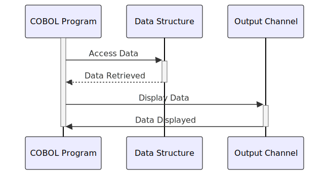

Gerado em: 1º de outubro de 2024
Título do Documento: Especificação da Estrutura de Dados para Pagamento de Contas
Descrição Resumida:
Este documento descreve a estrutura de dados para lidar com transações de pagamento de contas dentro de um programa COBOL. Ele define como o programa armazena e organiza informações relacionadas a cada pagamento, incluindo detalhes como ID da transação, informações da conta, valor do pagamento e status do processamento. Essa estrutura garante que os dados sejam formatados de forma consistente e facilmente acessíveis para processamento e exibição.
Histórias do Usuário:
Como auditor do sistema, preciso ter certeza de que todas as transações financeiras, incluindo pagamentos de contas, sejam registradas com precisão e facilmente rastreáveis para garantir a conformidade com os regulamentos e controles internos.
Épico Relacionado:
4 - Processamento de Transações
Requisitos Funcionais:
- O sistema deve fornecer um formato estruturado para armazenar detalhes da transação de pagamento de conta.
- A estrutura de dados deve incluir campos para:
- Nome ou identificador da transação
- Data e hora da transação
- Nome do programa para rastreamento
- ID da conta
- Saldo atual da conta
- Sinalizador de confirmação de pagamento
- Armazenamento de mensagem de erro
- O sistema deve suportar representações internas e externas dos dados.
- Formato interno otimizado para processamento COBOL.
- Formato externo adequado para exibição em telas ou relatórios.
Requisitos Não Funcionais:
- Desempenho: A estrutura de dados deve ser projetada para acesso e processamento eficientes dentro do programa COBOL.
- Manutenibilidade: A estrutura deve ser bem documentada e fácil de entender para futuras modificações.
- Confiabilidade: A integridade dos dados deve ser mantida por meio da validação adequada do tipo de dados.
Critérios de Aceitação:
- A estrutura de dados definida deve ser compilada sem erros dentro do programa COBOL.
- Todos os campos obrigatórios devem estar presentes e corretamente definidos em termos de tipo e comprimento de dados.
- As representações internas e externas dos dados devem ser consistentes e refletir com precisão as mesmas informações.
Melhorias de Código:
- Implementar verificações de validação de dados para cada campo para garantir a integridade dos dados.
- Adicionar comentários ao código para explicar a finalidade de cada campo e como ele é usado.
- Considere o uso de um dicionário de dados para gerenciar e documentar a estrutura de dados.
Melhorias de Segurança:
- Se dados confidenciais estiverem sendo armazenados (como números de conta), considere implementar criptografia ou outras medidas de segurança para proteger os dados.
- Garanta que os controles de acesso apropriados estejam em vigor para restringir o acesso não autorizado aos dados.
Diagrama Conceitual:

–Made by “Smart Engineering” (by Compass.UOL)–